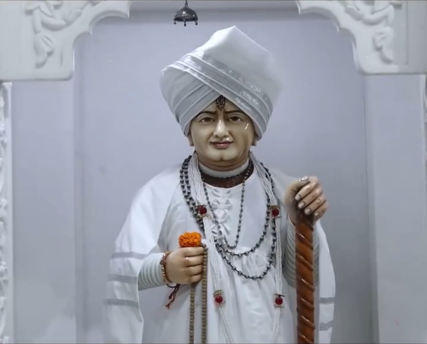

૪ દિવસ — ૧૨૬ કિમી
સુદામાપુરી થી વિરપુરધામ, માત્ર યાત્રા નહી, જલારામબાપાના આશીર્વાદનો મહાયજ્ઞ!!

જય જલારામઅનેક વર્ષોથી આયોજીત આ અલૌકિક અને ભવ્ય પદયાત્રા, ૪ દિવસની કઠોર તપસ્યા સમાન છે — ભક્તિનો હિલોળા લેતો મહાસાગર. જલારામ બાપાના સાક્ષાત આશીર્વાદનો મહાયજ્ઞ!
શ્રદ્ધા, સેવા અને ભક્તિનો મહાયજ્ઞ — ૪ દિવસ, ૧૨૬ કિમીની પવિત્ર પદયાત્રા
સુદામાપુરી થી વિરપુરધામ, માત્ર યાત્રા નહી, જલારામબાપાના આશીર્વાદનો મહાયજ્ઞ!!
લક્ષ્ય એક — વિરપુરધામ, શક્તિ એક — જલારામબાપાનું નામ, અનેક ભક્તો, એક જ પરિણામ!!
જ્યાં શક્તિ અને જીવંત પ્રેમ મળે છે, ત્યાં અલૌકિક ભક્તિની આ પદયાત્રા સુવર્ણ ઇતિહાસ સર્જે છે!!
{{ d.note }}
યાત્રા દરમિયાન દરરોજ નિઃશુલ્ક મહાપ્રસાદ અને અન્નદાનની વ્યવસ્થા. આજનું ભોજન મેનૂ જુઓ.
ભક્તિ અને શ્રદ્ધાની ઝલક
વારંવાર પૂછાતા પ્રશ્નો
{{ f.a }}
દરેક અપડેટ, દર્શન અને ભક્તિની ક્ષણ માટે અમને અનુસરો
બોલો જય જલારામ — શ્રદ્ધા રાખો, સેવા કરો, ને પ્રભુના નામમાં લીન થાઓ.— શ્રી જલારામ બાપા